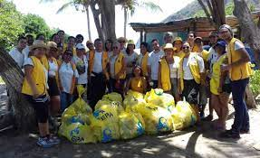
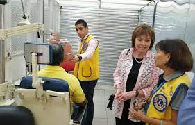

El Club de Leones de Villa de Cura fue fundado el 26 de Diciembre de 1974 y su primer presidente fue
Avilio Silva Medina.

"Los leones salvan la vista"
Al facilitar exámenes de la vista, equipar hospitales y clínicas, distribuir medicinas y crear
concienciación sobre las enfermedades de los ojos, los Leones cumplen con su misión de la Visión para
Todos. Tenemos un cometido firme por la preservación de la vista a través de innumerables campañas
locales y de nuestro esfuerzo internacional.
"Servicio Leonístico para la juventud"
Nuestros proyectos humanitarios a menudo brindan apoyo a los niños y escuelas locales a través de becas
escolares, recreación y servicio de mentores. Internacionalmente, ofrecemos muchos programas, incluyendo
el Concurso Cartel de la Paz, campamentos e intercambios juveniles, y Lions Quest.